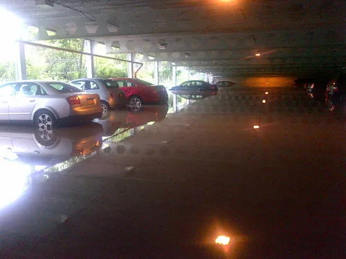

거제 옥포동 아파트 산사태…1명 사망, 극한호우에 중대본 1단계
17일 오전 4시 42분쯤 경남 거제시 옥포동의 한 아파트 인근 야산에서 산사태가 발생해 흙더미가 아파트 1층을 덮치는 사고가 났다. 소방당국은 매몰된 1층 주민 2명을 구조했으며, 이 가운데 심정지 상태로 발견된 1명을 병원으로 옮겼지만 끝내 숨졌다. 나머지 1명은 의식이 있는 상태로 구조돼 치료를 받고 있는 것으로 전해졌다. 소방과 경찰은 사고 직후 현장에 인력을 투입해 추가 매몰자가 있는지 확인하는 수색 작업을 벌였다.
이번 산사태는 거제 지역에 나흘간 이어진 기록적인 폭우 속에서 발생했다. 광복절인 15일 자정부터 17일 오전 8시까지 거제시에는 805.7mm에 이르는 비가 쏟아졌으며, 특히 16일 밤부터 17일 새벽 사이에는 시간당 50~100mm에 달하는 극한 호우가 집중된 것으로 파악됐다. 짧은 시간에 많은 비가 쏟아지면서 지반이 약해진 야산 사면이 무너져 내린 것으로 소방당국은 추정하고 있으며, 정확한 산사태 원인은 국립산림과학원 등 관계기관의 정밀 조사를 거쳐 확인될 예정이다.

거제뿐 아니라 경남과 제주 등 남해안 일대에는 이날 폭우로 인한 침수와 고립 피해가 잇따랐다. 김해에서는 한 대형마트 지하가 침수돼 소방당국이 배수 작업을 벌였고, 제주에서는 강풍을 동반한 비로 도로변 나무가 쓰러지거나 일부 지역 도로가 물에 잠기는 등 크고 작은 피해가 이어졌다. 거제 남부면과 통영 일부 지역에도 한때 시간당 50mm가 넘는 장대비가 쏟아지면서 저지대 침수 우려가 커졌던 것으로 전해졌다.
피해가 확산하자 중앙재난안전대책본부는 이날 1단계 비상근무 체계를 가동하고 남해안 지역의 피해 상황을 실시간으로 점검하고 있다. 지방자치단체들도 산사태 위험지역과 하천 주변 저지대 주민들에게 안전한 곳으로 대피할 것을 안내하는 문자를 발송하며 상황을 주시하고 있다. 거제시는 사고가 발생한 옥포동 아파트 주변 지역에 대해 추가 붕괴 위험이 있는지 긴급 안전 점검을 진행 중이며, 필요할 경우 인근 주민들에 대한 추가 대피 조치도 검토하고 있는 것으로 알려졌다.

기상청은 이날 오후부터 남해안을 적시던 비구름대가 점차 이동하며 폭우가 서서히 소강상태에 접어들 것으로 내다봤다. 다만 이미 지반이 상당히 약해진 상태인 만큼, 비가 그친 뒤에도 산사태나 축대 붕괴 위험이 당분간 이어질 수 있다는 경고가 나온다. 전문가들은 경사지나 옹벽 인근 주택에 거주하는 주민들의 경우 비가 그쳤다고 안심하지 말고 지반 침하나 균열 등 이상 징후가 없는지 계속 살펴볼 필요가 있다고 조언한다. 특히 짧은 시간에 많은 비가 쏟아진 뒤에는 눈에 보이지 않는 지하수 포화로 인해 시차를 두고 붕괴가 발생하는 경우도 있어, 당분간 주변 산사태 위험 표지판이나 경보 안내에 계속 주의를 기울여야 한다는 지적도 나온다.
당국은 이번 산사태로 숨진 주민의 정확한 인적사항과 사고 경위를 조사하는 한편, 매몰 당시 상황과 대피 여부 등을 확인하는 작업도 병행하고 있다. 거제시는 유가족에 대한 지원과 함께 실질적인 피해 복구 대책을 마련하겠다는 방침을 밝혔으며, 경남도 역시 이번 폭우로 인한 도내 전체 피해 규모를 종합적으로 집계하고 있다. 중대본은 추가 강우 상황을 지켜보며 필요시 비상근무 단계를 상향 조정하는 방안도 검토하고 있는 것으로 전해졌다. 아울러 거제시를 비롯한 남해안 지자체들은 산사태 취약지역으로 지정된 곳을 중심으로 긴급 전수조사에 나서, 유사한 피해가 반복되지 않도록 재발 방지 대책을 함께 마련하겠다는 입장이다.